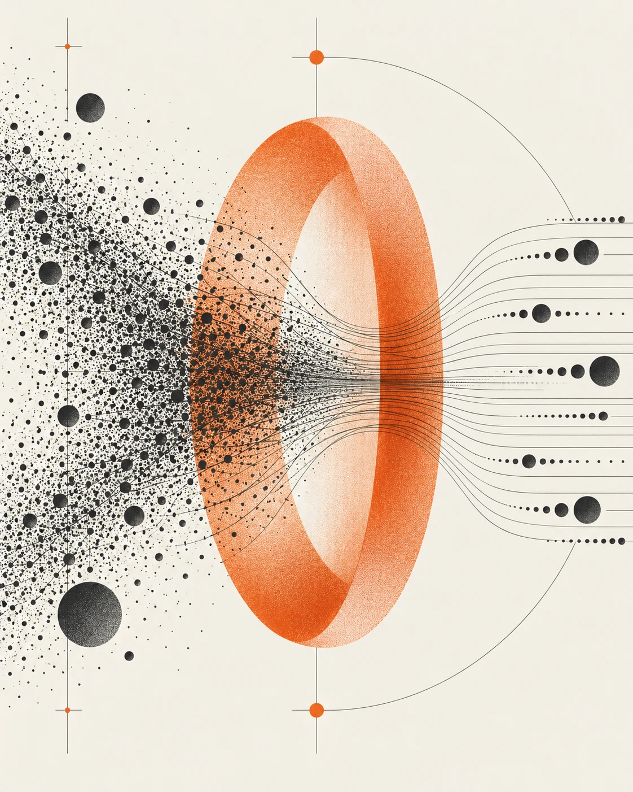

01BEANFLOW / КОММЕРЧЕСКИЙ ОПЫТ↗
Как проверить
ценовую гипотезу?
Цены
конкурентов
конкурентов
→
Сравнение
→
Гипотеза
для проверки
Сбор → очистка → юнит-экономика
✳ АНАЛИТИК ДАННЫХ / САНКТ-ПЕТЕРБУРГ
Превращаю сложные данные
в понятные бизнес-выводы.

коммерческий кейс / проекта
высшее образование окончено
документация и общение
01 / ПРАКТИКА
Задача → подход → результат
Нажмите на кейс, чтобы заглянуть внутрь.
Рядом с кейсами — расчёты на условных вводных. Изменяйте допущения и сравнивайте сценарии. Фактические результаты компаний не заявлены.
Сбор → очистка → юнит-экономика
Диагностика → OLS → отчёт в XLSX
Текст → классификация → ручная проверка
HTML или JavaScript — загрузчик под задачу.
Текст + URL + журнал происхождения
02 / ЧЕМ ПОЛЕЗЕН
Экономическая подготовка.
Практика работы с данными.
Python · SQL · веб-данные
pandas · статистика · scikit-learn
Excel · Power BI · визуализация
ЕСТЬ ЗАДАЧА ДЛЯ АНАЛИТИКА?